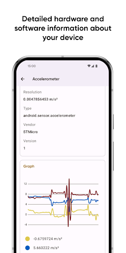
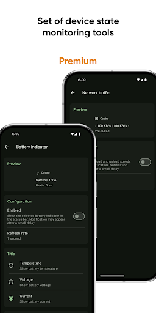

用 Castro 查了两周参数，踩出来的五个深坑
Castro 看着就是个参数工具，但真用来验机、调性能、查驱动的时候，我发现自己一开始完全没看懂读数。这篇把我踩过的几个典型坑摊开说，帮你少走弯路。
Castro官网 说起来就是个 Android 设备信息工具——仪表盘、CPU 频率、GPU 状态、屏幕测试，界面干干净净的，第一次打开我以为"这不就是个更漂亮的 AIDA64 吗"。结果用了两周，踩了一连串的坑，有的坑甚至让我差点把软件卸载了重装。写这篇就是想把这些教训整理出来，毕竟踩过的坑如果能让别人绕过去，也算值了。
我用它主要是两个场景：一是二手手机验机，二是自己玩游戏掉帧时查原因。这两个场景刚好覆盖了我踩坑最多的模块——屏幕测试、CPU/GPU 监控、驱动读取。下面逐个说。
坑一：GPU 模块一片空白，以为软件坏了
第一次在我那台老小米上打开 GPU 模块，只看到 Adreno 640 这个型号，下面频率、负载、温度全是空的，连实时跳动的数字都没有。我当时第一反应：这软件读取权限没拿到，或者版本不兼容。卸载后从官方下载拿新版本重装，甚至换回旧版本试试，折腾了半小时还是一样。
后来才明白这根本不是 Castro 的问题，是厂商的事。很多机型的 GPU 驱动压根不让第三方应用读取实时负载和温度——这是 Android 生态里的老问题了，厂商觉得这些信息涉及性能调优的"敏感数据"，干脆在驱动层就封死了。Castro 遇到这种情况只能显示静态规格，不是它没读到，是根本没数据可读。
解法很简单：先查一下你的机型有没有社区反馈说 GPU 实时数据可用。如果同机型别人也只有静态信息，那就不用折腾了。刷机换成开放内核（比如某些第三方 ROM）可能会解开，但那已经超出普通用户的范畴了。
坑二：CPU 频率卡片上数字一直在跳，读数根本"不准"
仪表盘里那张 CPU 频率卡片是我最喜欢的部分，八个核心的频率柱状图并排摆着，一目了然。但刚用的时候我总觉得哪里不对——开个设置页面，大核频率一下跳到顶一下又掉下来，我盯着看了十秒钟，频率没一个瞬间是稳定的。这让我很怀疑：这数字到底准不准？

实际上这不是读数不准，是我对 DVFS（动态电压频率调整）的理解错了。手机的 CPU 和桌面端不一样，它不会维持一个固定频率跑，而是根据当前负载动态调整——打开应用的瞬间需要算力，DVFS 立刻把大核频率拉上去；等页面加载完进入空闲，一秒之内就降回基频省电。你看到的"一直在跳"恰恰是 DVFS 在正常工作，反而如果频率长时间钉在某个数值不动，那才是有问题（比如温控锁频了）。
所以用 CPU 频率卡片的时候不要盯着单帧读数看，而是观察趋势——游戏场景下大核能不能持续维持在高位？空闲时能不能顺利降频？前者决定性能，后者影响续航。
坑三：游戏掉帧只盯 CPU，忽略了 GPU 才是真正的瓶颈
这是我踩过最久的坑。手机玩《原神》掉帧，我第一反应就是打开 Castro 看 CPU 使用率——哦，大核跑到 90% 了，果然是 CPU 不行。然后想办法降压超频，搞了半天效果也不明显。
直到有一天我同时盯着 CPU 和 GPU 两个模块看，才发现问题：CPU 确实高，但 GPU 频率直接拉到了最高而且使用率持续 95% 以上，CPU 高只是因为在等 GPU 渲染完送回来的数据。真正的瓶颈在 GPU 这边——图形设置调得超过了 GPU 的极限，CPU 被迫在做同步等待。
从那以后我养成了一个习惯：掉帧时先看 GPU 再看 CPU。如果 GPU 满载而 CPU 使用率低，调低画质或分辨率；如果 CPU 满而 GPU 空闲，那才是应用没有正确使用硬件加速，或者在做非图形密集型计算（比如后台在同步大量数据）。
坑四：温控降频只看 CPU 频率，忘了跳 Thermal 状态页
有段时间我手机一玩游戏就掉帧，CPU 大核频率直接被压到一半。我第一反应是应用调度有问题，把游戏后台清了重开，还是压频率。翻了好一会 Castro 的菜单才想起 Thermal 状态页——进去一看，CPU 温度已经到 72°C，温控策略主动把大核频率砍了一半。
这事儿说出来很蠢，但我猜不止我一个人犯过。Castro 的模块是分开的：CPU 频率卡只负责摆读数，温控状态在独立的 Thermal 页面。你不主动跳过去看，频率压下来的原因永远是个谜。现在我只要看到大核频率被压，第一反应就是切 Thermal 看温度，而不是先折腾应用调度。
顺便提一句，GPU 也有独立温度传感器的机型（比如骁龙 8 系的部分平台），GPU 温度超过 60°C 也会触发频率限制，逻辑和 CPU 一样，别只盯 CPU 那一侧。
坑五：验机时屏幕测试只测坏点，忘了触摸和边缘
这是我最早用 Castro 的场景——二手验机。第一次验机的时候我只盯着坏点测试，五纯色轮完发现没亮点暗点，就放心付了钱。结果用了三天发现屏幕左边框触摸偶尔失灵，打字时光标会跳到屏幕外。
后来去Castro文档翻了一下才弄明白——它根本就是三件套：坏点检查、触摸测试、颜色准确性。触摸测试要在全屏深色背景上连续划线，覆盖整个屏幕尤其是四个角和边缘——我那台机器左边框的触摸驱动有缺陷，画线到那个区域就会断触。颜色测试则是并排纯色方块比偏色，白色明显泛黄的话面板质量就有问题。
现在验机我固定三分钟流程：先划满屏触摸线、再轮五纯色坏点、最后盯一眼白色纯不纯。比事后发现问题再回头找卖家高效得多。

防坑清单
写了这么多，最后浓缩成几条速查，下次打开 Castro 的时候扫一眼：
- GPU 模块只有静态规格 = 厂商驱动锁了，不是软件坏了，别重装
- CPU 频率一直在跳 = DVFS 正常工作，看趋势别看单帧
- 掉帧排查顺序：先 GPU 再 CPU，别让 CPU 高使用率蒙了你
- 大核频率被压 = 立刻切 Thermal 看温度，别先折腾应用
- 验机屏幕测试 = 触摸 + 坏点 + 颜色三件套，少做一件漏一个坑
其实说来说去，Castro 本身没什么坑，坑都是我自己的认知盲区——看到一个读数就想当然地下结论，没去想"为什么会这样"。用多了就明白，这种工具的价值从来不是给你一个"好/坏"的判定，而是把原始数据摆出来让你自己判断。知道这些坑之后，这软件其实相当省心——对了，写这篇时参考的资料散落在GitHub、Gitee、GitCode三个仓库里，看哪个方便用哪个。